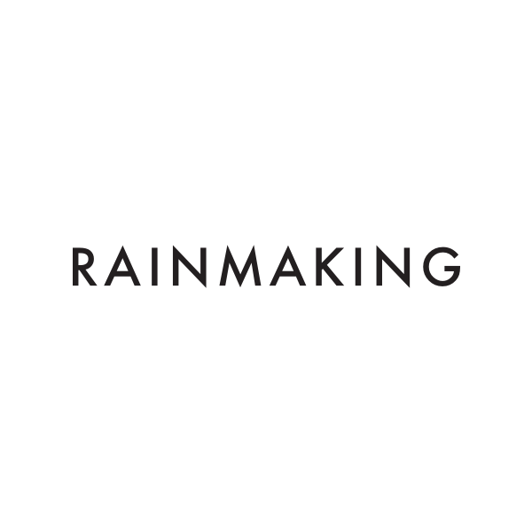

Master Thesis - Strengthen and evolve fault tolerance in a microservice architecture
2018
The project was done in co-operation with TV2 a TV station located in Denmark. They recently moved a large part of their
streaming architecture into microservice architecture. The project itself is protected by NDA but it included increasing
traceability within a system, identifying common mistakes and anti patterns based on a failure and fixing those problems
using common patterns. The project received the highest mark available (12/12)

Internship at Rainmaking
2017-2018
Working as an intern at Rainmaking in Copenhagen mostly reworking their mobile application and server. Using JavaScript,
React, React Native, Redux, Scala, iOS and Android.
MSc Software Engineering

Organizer
2016 & 2018
JSConf Iceland is a conference based on JSConf US. The JSConf conferences have gone all around the world bringing
people and their love for Javascript together. Hosted once in 2016 with world calss 27 speakers with over 400 attendees.
It sold out in minutes and was highly successful. It will be hosted again in March 2018

Software Engineer
2015-present
At
Dohop Dohop I worked as a software engineer and a frontend developer. I rewrote their entire frontend in ReactJS
using Redux for state control. I developed the Dohop application which was mainly written in React Native. Dohop also
used a Python backend system, which I worked with for numerous occasions.

BSc Computer Science

Bacholor project
2015
Tagplay allows you to keep everything up to date on your website using social media. My Bachelor project was to
develop a extension to their service that allowed the user to create social media game, that we would automatically
create in the Tagplay system. We then took care of counting who liked, commented and followed the rules set by the
creator. It had the capability to pick a winner randomly, contacting them via social media and post automatically who
won the game on social media. The project was a Python / Django backend with a ReactJS frontend. During this worked
I worked alot with the Facebook, Instagram and Twitter APIs.

Software Engineer
2014
Summer job working as a backend web developer at Nepal. It include working in Visual Studio, MSSQL, ASP .NET, C# using SVN.

Fullstack developer
2014
Summer job working for the Aggricultural University of Iceland. I developed a document library system that allowed logged
in users to upload a documents, with all the metadata they wanted. I also did a seperate application that allowed for
everyone to search for the uploaded documents and downlad them to their computer. The backend was developed in C# with
a MSSQL database behind it. The frontend application was a ASP.NET application using the MVC framework.
2012
I wrote my first piece of code (C++)